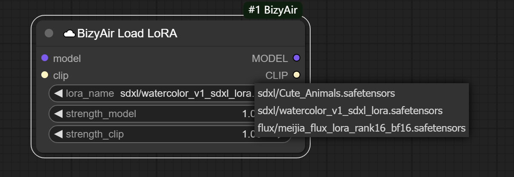

使用自定义 LoRA 模型¶
如果想使用本地的模型，可以先将模型上传，然后使用 BizyAir 的节点进行加载。 目前已经支持 SDXL、Flux 的 LoRA 模型的上传和使用。
默认情况下，BizyAir Load LoRA 节点只会显示少数示例模型。

上传后自定义模型后，BizyAir Load LoRA 节点会显示示例模型及用户的自定义模型。

Note
用户上传的模型，仅用户自己可见。
用户可以在 ComfyUI 中上传模型，也可以使用命令行工具上传模型。
在 ComfyUI 中上传模型¶
点击 BizyAir 的 "Model" 按钮，有 "Remote Folders" 和 "Upload" 两个菜单选项。
分别对应了已经上传的模型和上传模型功能。

在 “Remote Folders” 中可以查看已经上传的模型。

- 点击 "垃圾桶" 图标可以删除上传的模型
- Status 为 "Avaliable" 的模型，表示已经可以在推理中使用。
在 “Upload” 中可以上传模型。

其中：
- Type 选择类型（当前只支持 “lora”）
- Name 是远程目录的名字，如果与已经上传的远程模型重名，将会覆盖已有的远程模型
- Local Path 是本地需要上传目录的 绝对路径。如果你是 Linux/Mac 用户，它看上去应该是 "/yourpath/xxxx"，如果你是 Windows 用户，它看上去应该是 "C:\yourpath\xxxx"。
使用 SiliconCloud Client 上传模型¶
Note
如果你不熟悉命令行，请改用 ComfyUI 中上传模型 的方法。
为了上传模型，需要下载命令行工具：https://github.com/siliconflow/siliconcloud-cli/releases/tag/v0.1.1
请根据自己的 操作系统 和 芯片类型 选择正确的客户端下载。
下载解压后，得到可执行文件 siliconcloud (windows 版是 siliconcloud.exe)。
请确保 Linux/Mac 下它有执行权限，或者用以下命令加上执行权限。
chmod u+x siliconcloud
登录¶
运行以下命令登陆
siliconcloud login --api_key $APIKEY
$APIKEY 为你在 https://cloud.siliconflow.cn 中生成的 API Key。
上传模型¶
siliconcloud upload --type "bizyair/lora" --path /localpath/XLabs-AI/flux-lora-collection --name myflux-lora
参数解释：
--type "bizyair/lora"当前只支持 lora 模型的运行，所以需要使用这个 type/localpath/XLabs-AI/flux-lora-collection请把这个路径改成你计算机上需要上传的模型的真实 目录 的路径。整个目录中的 所有文件 将会被上传--name myflux-lora指定上传后的远程目录名为 myflux-lora
使用上传的模型¶
当模型的状态显示为 “Available” 时，表示模型已经可以在 BizyAir 工作流中使用。
Note
上传的模型，即使完成后，也需要一定时间才能在 BizyAir 中使用，一般为 20~30 分钟。如果状态不为 “Available”，请稍等片刻。
在 BizyAir 中，使用 BizyAir Load LoRA 节点，可以加载上传的模型。
示例工作流： Flux LoRA